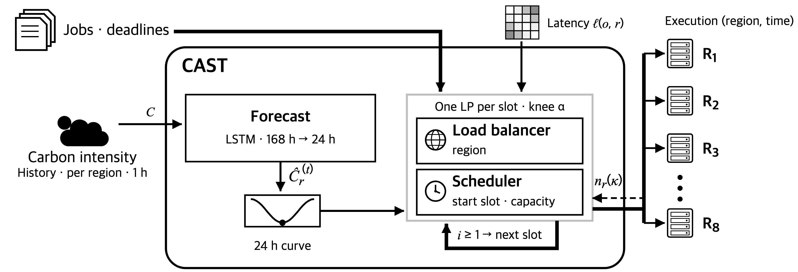
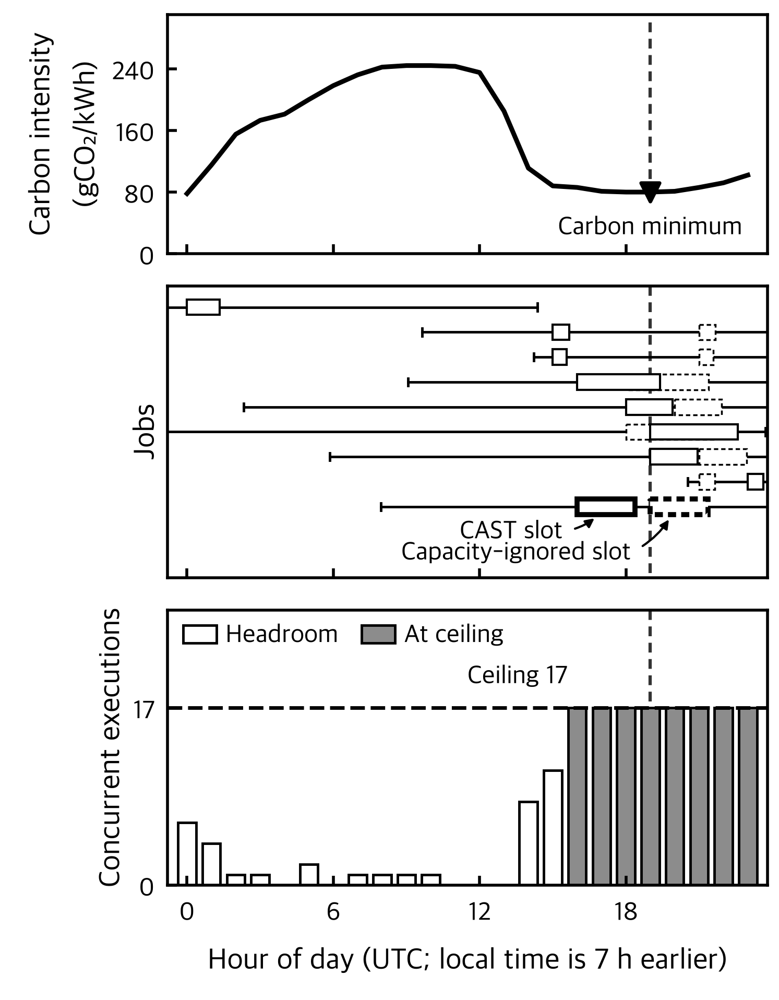
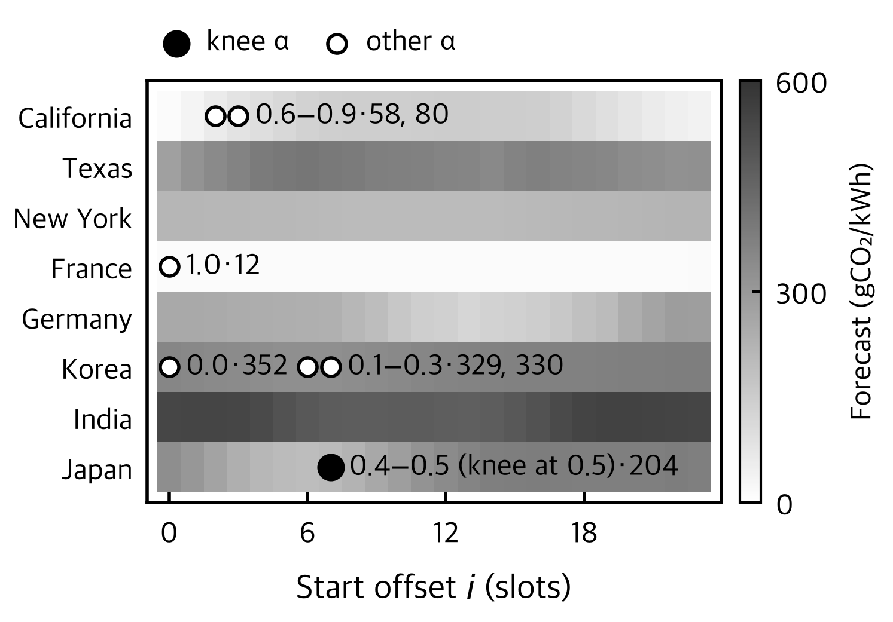
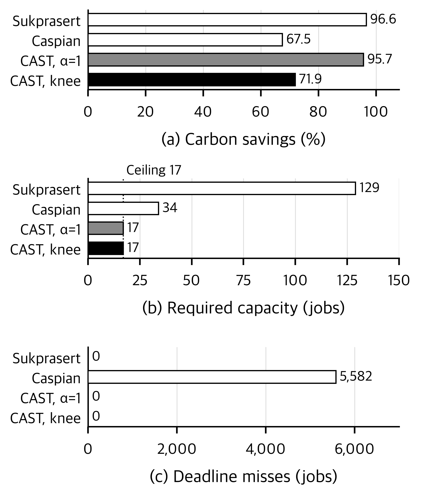

CAST (Carbon-Aware Spatio-Temporal Scheduling)
리전 용량과 마감을 지키며 작업을 탄소가 적은 리전과 시각으로 옮기는 스케줄러
Impact
- 배출 71.93% 감축합성 작업 기준, Azure VM 기록은 51.35%리전 상한과 마감 위반 0건
- 용량 안에서 거의 같은 감축1년치를 미리 아는 정책과 0.98%p 차이그 정책은 한 리전에 129개, CAST는 17개
- 매시간 다시 푸는 배정대기 작업 전체의 리전과 시각을 함께 결정슬롯당 평균 223 ms에 풀이
Background
같은 연산도 어느 리전에서 몇 시에 돌리는지에 따라 탄소 배출이 달라집니다.
8개 리전의 2025년 평균 탄소집약도는 인도 543.2, 프랑스 13.6 gCO₂/kWh로 약 40배 차이 납니다.
그런데 모든 작업이 같은 저탄소 리전과 시각을 고르면, 한 리전에 작업이 몰립니다.
용량을 두지 않은 선행 정책을 그대로 쓰면 작업의 99.75%가 프랑스 한 리전으로 갑니다.
선행 연구는 용량과 마감 중 하나를 제약으로 두지 않거나, 도착할 때 배정을 확정하고 다시 풀지 않습니다.
| 정책 | 리전 용량 | 마감 | 다시 풀기 |
|---|---|---|---|
| Sukprasert | 없음 | 지킴 | 없음 (1년치를 미리 앎) |
| Caspian | 지킴 | 페널티로 완화 | 매시간 |
| 도착 시 배정 (Zanotto) | 지킴 | 지킴 | 없음 |
| CAST | 넘긴 양에 가장 큰 페널티 | 지킴 | 매시간 |
Architecture

- 예측기: 리전마다 LSTM이 과거 168시간으로 앞으로 24시간의 탄소집약도를 예측
- 로드밸런서: 작업마다 리전 후보와 왕복 지연 비용을 정함
- 스케줄러: 시작 시각 후보를 만들고 리전 용량을 셈
- 통합 배정: 둘을 하나의 선형 계획으로 풀고, 이번 시간에 시작할 작업만 확정
Contributions
마감은 지키고, 용량은 가장 큰 페널티로
마감은 하드 제약으로 두고, 리전 상한을 넘긴 양은 목적함수에서 가장 비싸게 둡니다.
미룰 수 없는 작업이 들어올 자리를 위해 예비 용량을 남깁니다.

매시간 다시 풀기
매시간 모든 대기 작업의 리전과 시작 시각을 하나의 선형 계획으로 다시 풉니다.
이번 시간에 시작할 작업만 확정해, 그사이 도착한 작업과 자리를 다시 나눕니다.
도착할 때 확정하는 방식과 같은 지연에서 비교하면, 합성에서 0.96%p, Azure에서 2.53%p 덜 배출합니다.
무릎점 규칙
탄소와 지연 사이의 가중치 α는 미리 정하지 않습니다.
매시간 후보 α 11개로 배정을 풀고, 지연과 배출이 모두 가장 작은 점에 가장 가까운 것을 고릅니다.
예: 한국에서 제출된 작업이 7시간 뒤 일본에서 시작해, 지연 30 ms로 예측 탄소를 42% 낮췄습니다.

선행 정책을 같은 조건에서 비교
선행 정책을 같은 자료와 배출 계산으로 다시 구현해 비교했습니다.
Sukprasert는 1년치를 미리 알고도 한 리전에 129개를 동시에 돌려야 하고, Caspian은 5,582건의 마감을 넘겼습니다.

Results
8개 리전의 2025년 1년치 탄소집약도 위에서 합성 작업 14만여 건을 돌린 결과입니다.
| 설정 | 절감 | 필요 용량 | 마감 위반 |
|---|---|---|---|
| CAST, 무릎점 | 71.93% | 17 | 0 |
| CAST, 탄소만 (α=1) | 95.65% | 17 | 0 |
| 시간 이동만 | 18.78% | 17 | 0 |
| 리전 이동만 | 61.57% | 17 | 0 |
| Sukprasert | 96.63% | 129 | 0 |
| Caspian | 67.54% | 34 | 5,582 |
- Azure VM 기록으로 만든 작업에서도 51.35%를 줄였고, 위반은 0건
- 예측기, 상한, 작업을 바꿔도 위반은 0이고, 미래 정보를 모두 빼도 68.88%
- 슬롯당 풀이는 평균 223 ms, 최대 1,223 ms
- 평균 배출계수 기준이며, 모든 작업에 왕복 지연 상한 100 ms를 두면 32.98%
Troubleshooting
감축 효과가 실제보다 크게 나옴
- 문제
- 처음 계산한 탄소 감축률이 실제보다 크게 나옴
- 원인
- 작업을 옮길 때 쓴 예측 탄소집약도로 감축량까지 계산함. 예측이 빗나간 만큼이 감축으로 들어감
- 해결
- 라우팅은 예측값으로 하고, 정산은 같은 시각의 실측값으로만 하도록 입력을 나눔
- 결과
- 지금 밝힌 감축률 71.93%와 51.35%는 모두 실측으로 정산한 값